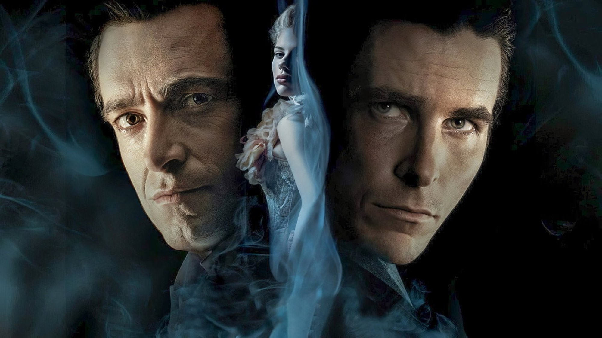
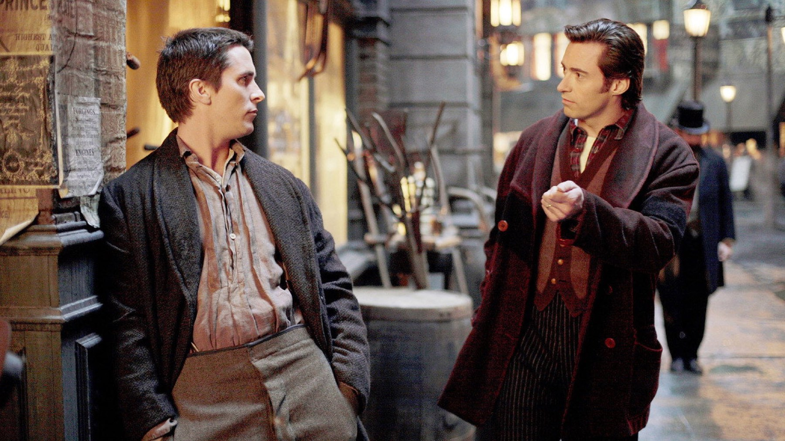
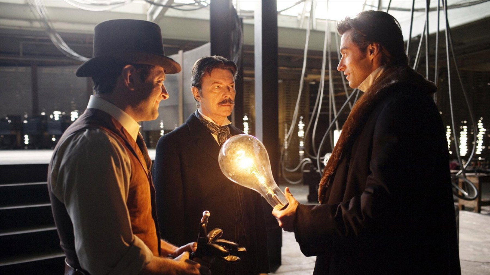
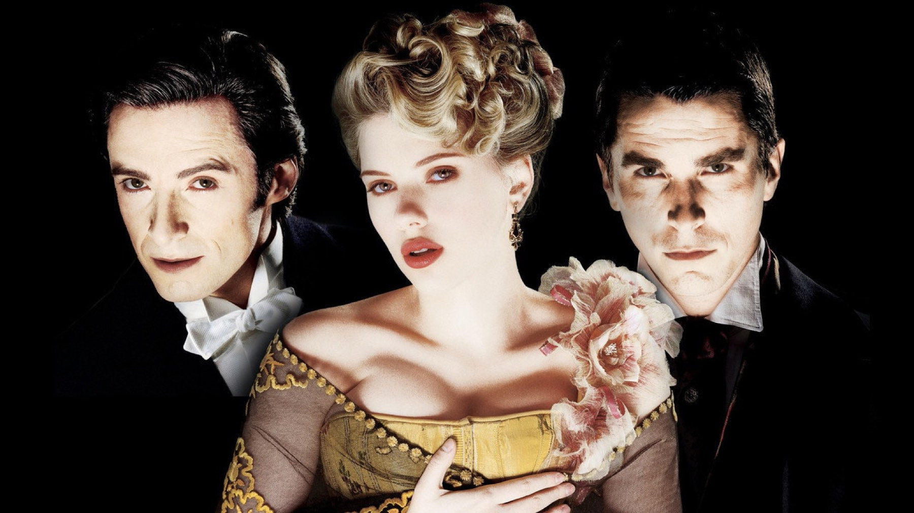

The Prestige compie 20 anni: 6 curiosità
David Bowie convinto di persona, cinque anni di sceneggiatura, una Londra vittoriana ricostruita a Los Angeles e due Oscar persi contro lo stesso film: il trucco meglio riuscito di Christopher Nolan, visto da dietro le quinte
Vent'anni fa, tra Batman Begins e Il cavaliere oscuro, Christopher Nolan fece un film su due illusionisti che si rovinano la vita a vicenda per scoprire un segreto. Costò 40 milioni di dollari, ne incassò 109 in tutto il mondo e all'epoca fu accolto come un buon thriller d'epoca. Con il tempo è diventato altro: il film in cui Nolan dichiara apertamente il suo metodo. Perché The Prestige non racconta soltanto un trucco, è costruito come un trucco, e lo spettatore ne è la vittima consenziente. Il 20 ottobre compie vent'anni: ecco sei cose che aiutano a guardarlo con occhi nuovi, senza svelare il finale.
Perché il film è diviso in tre atti come un numero di magia?
Lo dice il film stesso, nel primo minuto. Ogni trucco ha tre fasi: la promessa, in cui si mostra qualcosa di ordinario; la svolta, in cui l'ordinario diventa straordinario; e il prestigio, il colpo finale che riporta tutto al suo posto in un modo che nessuno si aspetta. La sceneggiatura di Christopher e Jonathan Nolan segue esattamente questa struttura. Il risultato è che la regola del gioco viene spiegata a chi guarda prima ancora che il gioco cominci, e funziona lo stesso. È la dimostrazione più elegante di un'idea che attraversa tutto il cinema di Nolan, da Memento a Inception: il pubblico vuole essere ingannato, purché l'inganno sia onesto.

Quanto ci hanno messo i fratelli Nolan a scrivere il film?
Il punto di partenza è il romanzo di Christopher Priest pubblicato nel 1995, un libro costruito su diari e punti di vista che si contraddicono. Adattarlo non era semplice: i due fratelli hanno scritto la sceneggiatura a più riprese nell'arco di circa cinque anni. Il cuore del romanzo resta, ma il film sposta tutto sulla rivalità tra Robert Angier, interpretato da Hugh Jackman, e Alfred Borden, interpretato da Christian Bale: due uomini che hanno talenti opposti, uno grande sul palco e l'altro geniale nel trucco, e che non sopportano di essere secondi.
Come è arrivato David Bowie nel ruolo di Nikola Tesla?
Nolan, ammiratore di Bowie da sempre, non si affidò a una telefonata: volò a New York per proporgli di persona il ruolo di Tesla. Bowie accettò dopo pochi minuti. La scelta ha un senso preciso: Tesla nel film è un uomo di genio che sembra venire da un altro tempo, e nessuno incarnava quell'idea meglio di lui. Le sue scene sono poche, ma sono quelle che si ricordano.

Dove è stata girata la Londra vittoriana?
Quasi tutta a Los Angeles. Le riprese, dal 16 gennaio al 9 aprile 2006, hanno usato quasi settanta luoghi della città scelti perché somigliassero alla Londra di fine Ottocento. Anche il laboratorio di Tesla in Colorado non è dove sembra: la scena è stata girata nel parcheggio dell'osservatorio di Mount Wilson, sopra Los Angeles. È una scelta che spiega molto dell'aspetto del film, concreto e mai patinato: i teatri, le strade e i laboratori hanno il peso dei luoghi veri.
Gli attori hanno imparato davvero i trucchi?
In parte sì. Il film ha avuto come consulente Ricky Jay, illusionista e grande studioso della storia della magia, che insieme a Michael Weber ha addestrato Jackman e Bale ai gesti dei prestigiatori, anche se con un'istruzione breve. Per gli attori bastava quanto serve a rendere credibili i trucchi più semplici davanti alla macchina da presa.

Quali Oscar ha sfiorato The Prestige?
Due: la miglior fotografia, per Wally Pfister, e la miglior scenografia, per Nathan Crowley e Julie Ochipinti. Li ha persi entrambi nella stessa sera, il 25 febbraio 2007, e contro lo stesso film: Il labirinto del fauno di Guillermo del Toro, che vinse sia la fotografia sia la scenografia. Nella categoria della fotografia c'era anche The Illusionist, l'altro film sui maghi di quell'anno. Vent'anni dopo, il destino dei due titoli si è ribaltato: The Prestige è il film di maghi che tutti ricordano.
Vale la pena rivederlo oggi?
Sì, ed è uno dei rari film che migliorano alla seconda visione. Chi conosce il finale scopre quante volte il film lo aveva già detto, in piena vista, con dialoghi e inquadrature che alla prima visione sembravano dettagli. È anche il punto di partenza migliore per capire il Nolan che è arrivato dopo, fino a The Odyssey: molto di ciò che verrà, dalle strutture a incastro di Inception ai tempi intrecciati di Tenet, qui è già in forma compiuta, dentro una storia di gelosia, ossessione e sacrificio. Lo consigliamo a chi ama i thriller che chiedono attenzione e a chi pensa di aver già capito tutto: il film è fatto proprio per loro. In Italia si vede in abbonamento su Sky Go, Now TV e Timvision, oppure a noleggio sulle principali piattaforme.
Domande frequenti
Quando è uscito The Prestige in Italia?
Il 22 dicembre 2006. Negli Stati Uniti era uscito il 20 ottobre 2006.
Chi interpreta Nikola Tesla in The Prestige?
David Bowie, che accettò la parte dopo pochi minuti quando Christopher Nolan andò a proporgliela di persona a New York.
Dove vedere The Prestige in streaming?
In abbonamento su Sky Go, Now TV e Timvision; a noleggio su Apple TV, Google Play, Rakuten TV, Amazon Video e CHILI.